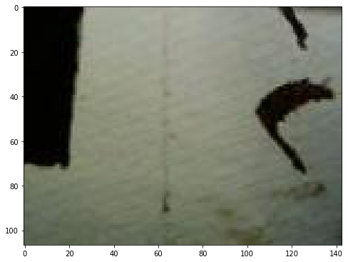

from cronomaxrf import read_datasets, get_arrayHow about the images?
Being able to read the images that are stored with each spectrum would be rather useful
In the previous sections we were able to read the spectral data from the native Crono HDF5 file. However, besides spectra the Crono instrument seems to capture color images at each spectrum location. I was not able to extract these images yet, because it is unclear how their binary data is encoded.
There are now indications that this is in a jpeg format. So let’s try again to read them. We begin again by printing an overview of the datasets. I would think that they are stored in datasets 8 and 9…
crono_filename = '14200215102021-blindTest2AgedDetail.HDF5' # 50 Mb
datasets = read_datasets(crono_filename)
for i, d in enumerate(datasets):
star = ' '
if i in [8, 9]:
star = '*'
print(f' {star}[{i}] {d.name}') [0] /Configuration/FinalSystemStatus
[1] /Configuration/InitialSystemStatus
[2] /Configuration/Settings
[3] /CreatedDateTime
[4] /CreatedWithSoftwareVersion
[5] /FileStructureVersion
[6] /Images/Documentation
[7] /Images/ImageAdjusting/ImagePixelSizeRatio
*[8] /Images/Static
*[9] /Images/StitchedImage
[10] /Images/VideoStreams
[11] /XRF/CalibrationPoints
[12] /XRF/DPPStartTimestamp
[13] /XRF/Detected
[14] /XRF/EnergyVector
[15] /XRF/LiveTimes
[16] /XRF/Maps/ComputedMaps
[17] /XRF/MotorsPositions
[18] /XRF/MotorsPositionsStats
[19] /XRF/MotorsTimestamps
[20] /XRF/OutputCountRates
[21] /XRF/ROIs/ROIsEnergies
[22] /XRF/ROIs/ROIsNames
[23] /XRF/ROIs/ROIsObjects
[24] /XRF/RealTimes
[25] /XRF/ResetCounterValue
[26] /XRF/Spectra
[27] /XRF/SpectraIDs
[28] /XRF/SpectraSelectedIndex
[29] /XRF/Timestamps
[30] /XRF/XComputedMapsCoordinate
[31] /XRF/YComputedMapsCoordinateOf most direct use would be to extract the stitched image. Let’s see if we can read the dataset as a binary string. We can explore the contents if this dataset as follows by adding square brackets and three dots [...].
datasets[9][...]array([array([], dtype='|V1')], dtype=object)Unfortunately, for our demo data the stitched image appears not to be saved into the HDF5 file. The dataset 9 is just an empty placeholder. It seems that one needs explicitly to create a stitched image as a separate step in the Crono software. So instead we will now need to work with the separate images that are captured for each spectrum location.
Extracting the jpeg images
As a first step we need to learn how to extract the images from the binary blobs in the dataset. Let’s not worry yet about stitching them.
im_blobs = datasets[8][1:] # ignore first (empty) element
print(f'Dataset 8 contains {len(im_blobs)} of binary data blobs')Dataset 8 contains 13357 of binary data blobsEach binary blob contains an image. I want to explain how to get the image out, because it is rather weird. Let’s first take a look at a single blob by converting the numpy array into a binary string…
binary_string = im_blobs[0].tobytes()
binary_stringb'\x00\x01\x00\x00\x00\xff\xff\xff\xff\x01\x00\x00\x00\x00\x00\x00\x00\x0f\x01\x00\x00\x00\xe9\t\x00\x00\x02\xff\xd8\xff\xe0\x00\x10JFIF\x00\x01\x01\x01\x00`\x00`\x00\x00\xff\xe1\x00BExif\x00\x00MM\x00*\x00\x00\x00\x08\x00\x01\x87i\x00\x04\x00\x00\x00\x01\x00\x00\x00\x1a\x00\x00\x00\x00\x00\x01\x90\x03\x00\x02\x00\x00\x00\r\x00\x00\x00,\x00\x00\x00\x00125903170418\x00\x00\xff\xdb\x00C\x00\x08\x06\x06\x07\x06\x05\x08\x07\x07\x07\t\t\x08\n\x0c\x14\r\x0c\x0b\x0b\x0c\x19\x12\x13\x0f\x14\x1d\x1a\x1f\x1e\x1d\x1a\x1c\x1c $.\' ",#\x1c\x1c(7),01444\x1f\'9=82<.342\xff\xdb\x00C\x01\t\t\t\x0c\x0b\x0c\x18\r\r\x182!\x1c!22222222222222222222222222222222222222222222222222\xff\xc0\x00\x11\x08\x00k\x00\x8f\x03\x01"\x00\x02\x11\x01\x03\x11\x01\xff\xc4\x00\x1f\x00\x00\x01\x05\x01\x01\x01\x01\x01\x01\x00\x00\x00\x00\x00\x00\x00\x00\x01\x02\x03\x04\x05\x06\x07\x08\t\n\x0b\xff\xc4\x00\xb5\x10\x00\x02\x01\x03\x03\x02\x04\x03\x05\x05\x04\x04\x00\x00\x01}\x01\x02\x03\x00\x04\x11\x05\x12!1A\x06\x13Qa\x07"q\x142\x81\x91\xa1\x08#B\xb1\xc1\x15R\xd1\xf0$3br\x82\t\n\x16\x17\x18\x19\x1a%&\'()*456789:CDEFGHIJSTUVWXYZcdefghijstuvwxyz\x83\x84\x85\x86\x87\x88\x89\x8a\x92\x93\x94\x95\x96\x97\x98\x99\x9a\xa2\xa3\xa4\xa5\xa6\xa7\xa8\xa9\xaa\xb2\xb3\xb4\xb5\xb6\xb7\xb8\xb9\xba\xc2\xc3\xc4\xc5\xc6\xc7\xc8\xc9\xca\xd2\xd3\xd4\xd5\xd6\xd7\xd8\xd9\xda\xe1\xe2\xe3\xe4\xe5\xe6\xe7\xe8\xe9\xea\xf1\xf2\xf3\xf4\xf5\xf6\xf7\xf8\xf9\xfa\xff\xc4\x00\x1f\x01\x00\x03\x01\x01\x01\x01\x01\x01\x01\x01\x01\x00\x00\x00\x00\x00\x00\x01\x02\x03\x04\x05\x06\x07\x08\t\n\x0b\xff\xc4\x00\xb5\x11\x00\x02\x01\x02\x04\x04\x03\x04\x07\x05\x04\x04\x00\x01\x02w\x00\x01\x02\x03\x11\x04\x05!1\x06\x12AQ\x07aq\x13"2\x81\x08\x14B\x91\xa1\xb1\xc1\t#3R\xf0\x15br\xd1\n\x16$4\xe1%\xf1\x17\x18\x19\x1a&\'()*56789:CDEFGHIJSTUVWXYZcdefghijstuvwxyz\x82\x83\x84\x85\x86\x87\x88\x89\x8a\x92\x93\x94\x95\x96\x97\x98\x99\x9a\xa2\xa3\xa4\xa5\xa6\xa7\xa8\xa9\xaa\xb2\xb3\xb4\xb5\xb6\xb7\xb8\xb9\xba\xc2\xc3\xc4\xc5\xc6\xc7\xc8\xc9\xca\xd2\xd3\xd4\xd5\xd6\xd7\xd8\xd9\xda\xe2\xe3\xe4\xe5\xe6\xe7\xe8\xe9\xea\xf2\xf3\xf4\xf5\xf6\xf7\xf8\xf9\xfa\xff\xda\x00\x0c\x03\x01\x00\x02\x11\x03\x11\x00?\x00\xf0\x1a(\xa5\xa4\x01\xd7\x81^\xdf\xf0\xd2\xc8\xd9\xf8d\xb3\xb1\xcc\xd2\x97\xc1=8\x02\xbcE\t\x0e\xa4z\xd7\xd0>\x12 \xe80c#<\xf2*$\xd8\\\xe8wf\x8c\x8ag8\xa5\x04\x03R"@ww\xc5#`)9\xc9\xa4#<\xe7\x14\xd6a\xb4\xd04H\xa5\x8a\xfbPp\x17\x93Q\xa9\xc2\x8ep)K\x8cq\xcd\x001\xcf\x1cT-\xc7$\xd4\x8cr}*&p\x07L\xd5\x08\x88\x92[\xa7\x1e\xf4\x8c\xaa\xc0\x86\x00\x83\xebJ\xcf\x9e\x98\xa8\xdfoRh\xb8\x1cW\x8e\xbc>\xd7V\xff\x00\xda6(ZH\x80\xf3\x10\x0eJ\xfa\x8f\xa5O\xe1V\xb2\xd7\xb48\xcb\x9d\xd70\xfe\xeeU#\x9e:\x1f\xc4b\xba\xdc\xe4c\x8eF?\n\xf3aeu\xe1\xcf\x88*\x96\x91\x89"\xb9;\xbc\xb5\xe3\xe5c\xc8\xf6\xc7\xf8PQ\xd9\x1f\r\xd8\x91\x81\x12\x9f\xc2\xa1o\nZ\xb7\x1bT}\x05o+\xaez`\xd2\xb18\xeb\xf9SH\x96\xcf\x9b\xe9\r\x19\xa2\xa8c\xa3\x1b\xa4Q\xea@\xaf\xa1\xfc;\x10\xb7\xd0\xed#L\x95\x0895\xf3\xd5\xba<\x93\xc6\x91\xfd\xf6`\x16\xbe\x89\xd2\x95\xa3\xd2\xadQ\xb2\x19bPG^k9\xbdFiq\xdc\xfe\x14\xbb\x81<\n\x87\xa7\xd6\x97$\x9eN*."B{\xe6\x92F\xfd\xd9\xda9\xa6\x17\xc1\xc7_z\x0ev\xf3\xc5;\x81 \xe4\x02\xde\x94\x12q\xc5F\x81T\x03\x9aRI\xe9\xc51\x8dc\x93\xc9\xa6\x17\xc7\x02\x95\xbd\xcdB\xc4\xf6\xa0\x06\x9f\x99\x884\xdc\xa2\xf1\xd4\xfet\xd9\x07s\xcdDOu\xe7\xebM\x12I\xceI\xfb\xb5\x9d{\xa4Gw\xa9Z\xea)3Es\x00\xdb\x95\x19\xdc=\x0f\xebW\xb7\x16\xce\x7f!Q\x02\xa8\xb8\x03\x19\xfc\xe9\x85\xc9Cd\x9c\xf4\xecM\x05\xb1\xc6sQ\x1c\x8e:(\xf5\xa02\xe3 \xe6\x9abg\xcf\x94Q@\xaa(\xd1\xd0\x80mn\xcc\x15\xc8\xf3Fk\xe8\x04\xf9Ps\xd0t\xcdxw\x83#\x12x\x9e\xd4\x1c\xf5\'\x8a\xf6\xa8\xca\x06\'\xe6\xc9<\xe4\xd657\x02\xe0\x91\x88\xc0\x14n\xfe\xf1\xcdA\xbb=[\x8fjP\xca:sR\x05\x85l\xf4\xa6\xcd\xf7\t,p9\xa6e\xba\xf4\xa4v\xc2s\xce{u\xa0d\xb1\xb2\xba\x02\xa7\x8fj\\\x92\x0e\x0f\x1e\xd5\x1a\xee\n0\x02\x8a2\xa3\xabU&\x02\xb7O\x94f\xa1l\xf4\xce*C\'\x18\x035\x13\x9c\x8c\x13\xf9q@\x86\x1c\x0e\xbdj\x95\xed\xd4\x16\xb0\x19n$\x11F\xbdY\x8dY\x91\x82\xa3\x1c\xf095\xe4\x1e,\xd7f\xd5\xb5&D\x90\x9b8\x8e\x15q\xc6GSM\x01\xb5\xab\xf8\xfeg/\x0e\x99\x08T_\xf9k\'$\xfd\x07\x18\xfdk\x06\xeb\xc4\xda\xa5\xda)\x9a\xeeM\x9b\xb3\xb2<\xa8>\xde\xe2\xb0\xc8\xde\xc1@\xcb\x13\xc0\x1d\xeb\xa6\xd1\xbc#5\xfa\xac\xd7\x0ea\x88\x1c\x10G\xcci\xecZH\xb3\x1f\x8e/\xfc\x94\x86t\x8bg\x00\xc9\x18 \xd7e\xa2j\x96\xb7\xfar\xcbnJ\x80pCu\xcdfC\xe0\xdd\x15$\xdebv\x1bq\xb5\x98\xe3\xeb\xebZ\x96\x16\x16z\\/\x15\x94e\x11\x8eH\x04\x9eh\xd5\xecCh\xf1Z(\xa2\xb4\x03\xab\xf8\x7fn&\xf1*\xbf\xfc\xf2\x8c\xbfZ\xf5\xe1\x9e\x84W\x96\xfc6L\xea\xb7rwX\xbf\x99\xafO\x04\x91\x9c\xe3\xd7\x15\x8c\xf7\x01\xfct\'\xf04\xfeH#\x1f\xd2\xa3\xcau\xe74\xb9?\xde\xe0T\x01 \xdd\xd4\xb7\xe1D\x84\xec%\x00\'\xda\xa3\xc8\xc6@\xcf\xd6\x9a\xee|\xb3\xc6=3L\x0b\x08\xccPn?\\R\x10\x80\xe4rj\xbae>b\xe4\x83\xd8\xf6\xa9U\xc1\xed@\xc7\xf3\x8e8\xa6>\x07S\x9f\xa9\xa4/\x91\xd7\x03\xda\xa3fQ\xd0\x93\x9fJb#r\n\x9c\xe7\xf9\n\xf2\xcf\x1a\xe8\xe3O\xd4\r\xcc1\xe2\xdenF\xd1\xc2\xb5z\x8b\x96\xce1\x8f\xaf5\x97\xabX\xc5\xa9Y\xc9kr\x01F\xef\xdc\x1fQM\rhr\x9e\x12\xf0\xfc\x06\xda-M\xa4Y\x1d\xc1\x026O\xbaGB\x0f\xadu\xe06\xe6l\x00O_z\xe4t\xbb\xd9<7x\xdaU\xfb\xff\x00\xa3\xb9\xcc\x12\xe3\x8e\x7f\xa75\xd3\x87v\x1b\xb7\x82\xa7\xa1\x1d\xe9\x89\x92n\x19\xf9\xcf\xe1I\xb9\x8f\n8\xed\x8a\x88\x91\x81\xd0\xd2\x06*sVA\xe4\xb3\xe9W\xf6\xb1\x87\x9e\xd2dS\xd0\xb2\x1cTPZOq2\xc5\x0c.\xf2\x1e\x8a\xa3\x9a\xf6\xc2\x12E\xc3s\xd8\x83DqE\x19\xca\xc4\xa0\xf4\xc8\x15\x1e\xd1\x97s\x88\xf8s\x14\xb1\xeaW\xca\xcb\xb7j\x00\xc1\x87C\x9a\xf4l\x05\xe8\xd5N\x18-\xed\xcb\x18\xd1\x13y\xcbm\x18\xcdN\xb2\xaf`j$\xdbw\x11(9\xc9\x19\x02\x9c\x01\xce\xec\xf1Q\xef\xcfZO5G\x19\xfe\xb4\x0e\xe4\xca\xc0\x92\x14\xfe&\x92V\xf9z\xfeT\xcf3\x8c\x05\xa4f]\x84\x1e\xb8\xeai\x01 |\x0e\x99\xfdh\x0cOQ\x81LG\xc4k\x8ex\xa3$\xf3\xc51\x0eo^\xfe\xf5\x1e\xf6\xc6\x02\xd3\xb7\xed\xe4\x8c\xd3ZV?\xc2\x14{\xd3@4\xb1+\xcbc\xda\xab\x12\xacz\xe6\xa5\x90\x03\x92O\xe7U\xda@>\xef\xe8*\x80\xcc\xd7thu{?)\x86\xd7^cr~\xe9\xff\x00\n\xe7\xfc3\xa8\xb2\xbc\xba]\xc3\xb1\x96\x12v\x92z\xfa\xd7^\xe5\xb1\xd3\x1e\xf9\xac{\xad*\xceK\xd8\xef\x1b\x11K\x1bn\xf3\x00\xc6\xefcL.]\xde\xbd\xb9\xa6\x97\'\xae?:\x8b\xcc\x89N\xd0\xc3\xd8\n\x0b\xa9?\xe1T\x98\x99\xa2\x8f\xc6z\x9a\x7f\x98\xe4\xf0@\x15Ye-\xfc8\xc5?+\x8eNEga\x16\x03\x8f\xae*Es\x8c\x8e*\xa0\x94\xfaq\xda\x9c$`3\xc7\xd2\x90\xd1kw\xa9\xcd(\x90\x8e\xdf\x9d@\xb2\xa8\x1cu\xf6\xa7\x16=\xcf\xf5\xa42S\xb8\xf2O\xe5P\xdcO\xe5B\xcd\xd8\nM\xdb{\x92}\xea\x0b\xf0\xd3Z<H\xdbY\xc62{P\x05\xaby_\xcbR\xe3\x04\xf5\xc5H\xd3(\xe5\x8f\x15N\xd4<V\xa9\x1c\x8d\xb9\x80\xc18\xc6jO0t\xc0\xfc(\x02Ar3\xf2\x82q\xebO\x12\x8fP\rT\x91\x9c)*?:\xaa\x93K\xbfk(\x03\xd6\x8b\xd8\x0b\xf2:\x93\x9e\xa7\xdf\x9a\xad$\xae\x14\xe0\x1f\xc6\x9e\xb2\xa9\x18\x075\x1c\xa4\xa1\xc9\xfc*\x90\x15^K\x82\xbd\xb2x\xfaU\x19\x0c\x84\x98\xc8g9\xeaj\xfe\xed\xff\x003\x1cg\xd6\x9a\xcc\x87\x85\xebM!\\\xc9\x92\xdain\x16I\tP\x9ft)\xab\xdb\xce9\xebC\x02\xc4\x8eF;\xd4M\x81\xd5\xbaz\xd5\xa5a=M\x05\x93\x1f|\xd0\\1\xe3?\x853\x03\x00\xe3\x9ap\xfb\xb9\xefP\x04\x99#\x9c\xf1F\xee\xf9\xe6\xa0O\x99\xb9\xe6\xa4\x1c\x9c{\xd4\x810v\xc0\xed\x9e\xf4\xed\xcc>\xf3\x92=\xaa\x12\xc7!s\xc59@\xe6\x98\xc9L\x80}\xd0~\xb4\xc6rA\xf9\xb0=sH\x7f\xd5\xb5@\x18\xf9l3\xc0\x14XD\xc1\xf6(\xdc\xdd{\x13\x9a\x90L\xc7\xb5S\xb6c\xbd\x86\x7f\x86\x9d3\xb0e\xc1\xa9\xb8\xecXg`s\x9f\xa8\xaa\xd3\\\xf9l0\x99\xa9\xa2\xf9\x97\'\x93H\x14\x12\xc0\x81\xd2\x86R!\xfbp\x03\x85\xda}M4Nns\xbd\x86\x14\xf1\xb7\xbdQ\x9c\x0f6\xa4O\x9a0\t8\xcf@qBm\xb0h\x9d\xb6\xee\xc9=:S\x1c\xfc\xc0\xe7\xfaT\xbb\x14.@\x15\x16\x01$\x91[$A\x1b\xb3\xb0\xc1?\x95S\x9e@\xb8\xce3\xeej\xd31*A<U+\xbe\x13\x80?*`\x7f\xff\xd9\x0b'In this binary data there is a jpeg file lurking somewhere. Now, if you would try to save this string as a file straight away, it does not produce a valid jpeg file. A proper jpeg file should start with \xff\xd8 and end with \xff\xd9. So if we remove the first 28 characters and the last character we select the actual jpeg part of the binary string. I learned this here: https://laurentmeyer.medium.com/understanding-jpeg-format-the-hard-way-57dd34abe2f1
jpeg = binary_string[27:-1]
jpegb'\xff\xd8\xff\xe0\x00\x10JFIF\x00\x01\x01\x01\x00`\x00`\x00\x00\xff\xe1\x00BExif\x00\x00MM\x00*\x00\x00\x00\x08\x00\x01\x87i\x00\x04\x00\x00\x00\x01\x00\x00\x00\x1a\x00\x00\x00\x00\x00\x01\x90\x03\x00\x02\x00\x00\x00\r\x00\x00\x00,\x00\x00\x00\x00125903170418\x00\x00\xff\xdb\x00C\x00\x08\x06\x06\x07\x06\x05\x08\x07\x07\x07\t\t\x08\n\x0c\x14\r\x0c\x0b\x0b\x0c\x19\x12\x13\x0f\x14\x1d\x1a\x1f\x1e\x1d\x1a\x1c\x1c $.\' ",#\x1c\x1c(7),01444\x1f\'9=82<.342\xff\xdb\x00C\x01\t\t\t\x0c\x0b\x0c\x18\r\r\x182!\x1c!22222222222222222222222222222222222222222222222222\xff\xc0\x00\x11\x08\x00k\x00\x8f\x03\x01"\x00\x02\x11\x01\x03\x11\x01\xff\xc4\x00\x1f\x00\x00\x01\x05\x01\x01\x01\x01\x01\x01\x00\x00\x00\x00\x00\x00\x00\x00\x01\x02\x03\x04\x05\x06\x07\x08\t\n\x0b\xff\xc4\x00\xb5\x10\x00\x02\x01\x03\x03\x02\x04\x03\x05\x05\x04\x04\x00\x00\x01}\x01\x02\x03\x00\x04\x11\x05\x12!1A\x06\x13Qa\x07"q\x142\x81\x91\xa1\x08#B\xb1\xc1\x15R\xd1\xf0$3br\x82\t\n\x16\x17\x18\x19\x1a%&\'()*456789:CDEFGHIJSTUVWXYZcdefghijstuvwxyz\x83\x84\x85\x86\x87\x88\x89\x8a\x92\x93\x94\x95\x96\x97\x98\x99\x9a\xa2\xa3\xa4\xa5\xa6\xa7\xa8\xa9\xaa\xb2\xb3\xb4\xb5\xb6\xb7\xb8\xb9\xba\xc2\xc3\xc4\xc5\xc6\xc7\xc8\xc9\xca\xd2\xd3\xd4\xd5\xd6\xd7\xd8\xd9\xda\xe1\xe2\xe3\xe4\xe5\xe6\xe7\xe8\xe9\xea\xf1\xf2\xf3\xf4\xf5\xf6\xf7\xf8\xf9\xfa\xff\xc4\x00\x1f\x01\x00\x03\x01\x01\x01\x01\x01\x01\x01\x01\x01\x00\x00\x00\x00\x00\x00\x01\x02\x03\x04\x05\x06\x07\x08\t\n\x0b\xff\xc4\x00\xb5\x11\x00\x02\x01\x02\x04\x04\x03\x04\x07\x05\x04\x04\x00\x01\x02w\x00\x01\x02\x03\x11\x04\x05!1\x06\x12AQ\x07aq\x13"2\x81\x08\x14B\x91\xa1\xb1\xc1\t#3R\xf0\x15br\xd1\n\x16$4\xe1%\xf1\x17\x18\x19\x1a&\'()*56789:CDEFGHIJSTUVWXYZcdefghijstuvwxyz\x82\x83\x84\x85\x86\x87\x88\x89\x8a\x92\x93\x94\x95\x96\x97\x98\x99\x9a\xa2\xa3\xa4\xa5\xa6\xa7\xa8\xa9\xaa\xb2\xb3\xb4\xb5\xb6\xb7\xb8\xb9\xba\xc2\xc3\xc4\xc5\xc6\xc7\xc8\xc9\xca\xd2\xd3\xd4\xd5\xd6\xd7\xd8\xd9\xda\xe2\xe3\xe4\xe5\xe6\xe7\xe8\xe9\xea\xf2\xf3\xf4\xf5\xf6\xf7\xf8\xf9\xfa\xff\xda\x00\x0c\x03\x01\x00\x02\x11\x03\x11\x00?\x00\xf0\x1a(\xa5\xa4\x01\xd7\x81^\xdf\xf0\xd2\xc8\xd9\xf8d\xb3\xb1\xcc\xd2\x97\xc1=8\x02\xbcE\t\x0e\xa4z\xd7\xd0>\x12 \xe80c#<\xf2*$\xd8\\\xe8wf\x8c\x8ag8\xa5\x04\x03R"@ww\xc5#`)9\xc9\xa4#<\xe7\x14\xd6a\xb4\xd04H\xa5\x8a\xfbPp\x17\x93Q\xa9\xc2\x8ep)K\x8cq\xcd\x001\xcf\x1cT-\xc7$\xd4\x8cr}*&p\x07L\xd5\x08\x88\x92[\xa7\x1e\xf4\x8c\xaa\xc0\x86\x00\x83\xebJ\xcf\x9e\x98\xa8\xdfoRh\xb8\x1cW\x8e\xbc>\xd7V\xff\x00\xda6(ZH\x80\xf3\x10\x0eJ\xfa\x8f\xa5O\xe1V\xb2\xd7\xb48\xcb\x9d\xd70\xfe\xeeU#\x9e:\x1f\xc4b\xba\xdc\xe4c\x8eF?\n\xf3aeu\xe1\xcf\x88*\x96\x91\x89"\xb9;\xbc\xb5\xe3\xe5c\xc8\xf6\xc7\xf8PQ\xd9\x1f\r\xd8\x91\x81\x12\x9f\xc2\xa1o\nZ\xb7\x1bT}\x05o+\xaez`\xd2\xb18\xeb\xf9SH\x96\xcf\x9b\xe9\r\x19\xa2\xa8c\xa3\x1b\xa4Q\xea@\xaf\xa1\xfc;\x10\xb7\xd0\xed#L\x95\x0895\xf3\xd5\xba<\x93\xc6\x91\xfd\xf6`\x16\xbe\x89\xd2\x95\xa3\xd2\xadQ\xb2\x19bPG^k9\xbdFiq\xdc\xfe\x14\xbb\x81<\n\x87\xa7\xd6\x97$\x9eN*."B{\xe6\x92F\xfd\xd9\xda9\xa6\x17\xc1\xc7_z\x0ev\xf3\xc5;\x81 \xe4\x02\xde\x94\x12q\xc5F\x81T\x03\x9aRI\xe9\xc51\x8dc\x93\xc9\xa6\x17\xc7\x02\x95\xbd\xcdB\xc4\xf6\xa0\x06\x9f\x99\x884\xdc\xa2\xf1\xd4\xfet\xd9\x07s\xcdDOu\xe7\xebM\x12I\xceI\xfb\xb5\x9d{\xa4Gw\xa9Z\xea)3Es\x00\xdb\x95\x19\xdc=\x0f\xebW\xb7\x16\xce\x7f!Q\x02\xa8\xb8\x03\x19\xfc\xe9\x85\xc9Cd\x9c\xf4\xecM\x05\xb1\xc6sQ\x1c\x8e:(\xf5\xa02\xe3 \xe6\x9abg\xcf\x94Q@\xaa(\xd1\xd0\x80mn\xcc\x15\xc8\xf3Fk\xe8\x04\xf9Ps\xd0t\xcdxw\x83#\x12x\x9e\xd4\x1c\xf5\'\x8a\xf6\xa8\xca\x06\'\xe6\xc9<\xe4\xd657\x02\xe0\x91\x88\xc0\x14n\xfe\xf1\xcdA\xbb=[\x8fjP\xca:sR\x05\x85l\xf4\xa6\xcd\xf7\t,p9\xa6e\xba\xf4\xa4v\xc2s\xce{u\xa0d\xb1\xb2\xba\x02\xa7\x8fj\\\x92\x0e\x0f\x1e\xd5\x1a\xee\n0\x02\x8a2\xa3\xabU&\x02\xb7O\x94f\xa1l\xf4\xce*C\'\x18\x035\x13\x9c\x8c\x13\xf9q@\x86\x1c\x0e\xbdj\x95\xed\xd4\x16\xb0\x19n$\x11F\xbdY\x8dY\x91\x82\xa3\x1c\xf095\xe4\x1e,\xd7f\xd5\xb5&D\x90\x9b8\x8e\x15q\xc6GSM\x01\xb5\xab\xf8\xfeg/\x0e\x99\x08T_\xf9k\'$\xfd\x07\x18\xfdk\x06\xeb\xc4\xda\xa5\xda)\x9a\xeeM\x9b\xb3\xb2<\xa8>\xde\xe2\xb0\xc8\xde\xc1@\xcb\x13\xc0\x1d\xeb\xa6\xd1\xbc#5\xfa\xac\xd7\x0ea\x88\x1c\x10G\xcci\xecZH\xb3\x1f\x8e/\xfc\x94\x86t\x8bg\x00\xc9\x18 \xd7e\xa2j\x96\xb7\xfar\xcbnJ\x80pCu\xcdfC\xe0\xdd\x15$\xdebv\x1bq\xb5\x98\xe3\xeb\xebZ\x96\x16\x16z\\/\x15\x94e\x11\x8eH\x04\x9eh\xd5\xecCh\xf1Z(\xa2\xb4\x03\xab\xf8\x7fn&\xf1*\xbf\xfc\xf2\x8c\xbfZ\xf5\xe1\x9e\x84W\x96\xfc6L\xea\xb7rwX\xbf\x99\xafO\x04\x91\x9c\xe3\xd7\x15\x8c\xf7\x01\xfct\'\xf04\xfeH#\x1f\xd2\xa3\xcau\xe74\xb9?\xde\xe0T\x01 \xdd\xd4\xb7\xe1D\x84\xec%\x00\'\xda\xa3\xc8\xc6@\xcf\xd6\x9a\xee|\xb3\xc6=3L\x0b\x08\xccPn?\\R\x10\x80\xe4rj\xbae>b\xe4\x83\xd8\xf6\xa9U\xc1\xed@\xc7\xf3\x8e8\xa6>\x07S\x9f\xa9\xa4/\x91\xd7\x03\xda\xa3fQ\xd0\x93\x9fJb#r\n\x9c\xe7\xf9\n\xf2\xcf\x1a\xe8\xe3O\xd4\r\xcc1\xe2\xdenF\xd1\xc2\xb5z\x8b\x96\xce1\x8f\xaf5\x97\xabX\xc5\xa9Y\xc9kr\x01F\xef\xdc\x1fQM\rhr\x9e\x12\xf0\xfc\x06\xda-M\xa4Y\x1d\xc1\x026O\xbaGB\x0f\xadu\xe06\xe6l\x00O_z\xe4t\xbb\xd9<7x\xdaU\xfb\xff\x00\xa3\xb9\xcc\x12\xe3\x8e\x7f\xa75\xd3\x87v\x1b\xb7\x82\xa7\xa1\x1d\xe9\x89\x92n\x19\xf9\xcf\xe1I\xb9\x8f\n8\xed\x8a\x88\x91\x81\xd0\xd2\x06*sVA\xe4\xb3\xe9W\xf6\xb1\x87\x9e\xd2dS\xd0\xb2\x1cTPZOq2\xc5\x0c.\xf2\x1e\x8a\xa3\x9a\xf6\xc2\x12E\xc3s\xd8\x83DqE\x19\xca\xc4\xa0\xf4\xc8\x15\x1e\xd1\x97s\x88\xf8s\x14\xb1\xeaW\xca\xcb\xb7j\x00\xc1\x87C\x9a\xf4l\x05\xe8\xd5N\x18-\xed\xcb\x18\xd1\x13y\xcbm\x18\xcdN\xb2\xaf`j$\xdbw\x11(9\xc9\x19\x02\x9c\x01\xce\xec\xf1Q\xef\xcfZO5G\x19\xfe\xb4\x0e\xe4\xca\xc0\x92\x14\xfe&\x92V\xf9z\xfeT\xcf3\x8c\x05\xa4f]\x84\x1e\xb8\xeai\x01 |\x0e\x99\xfdh\x0cOQ\x81LG\xc4k\x8ex\xa3$\xf3\xc51\x0eo^\xfe\xf5\x1e\xf6\xc6\x02\xd3\xb7\xed\xe4\x8c\xd3ZV?\xc2\x14{\xd3@4\xb1+\xcbc\xda\xab\x12\xacz\xe6\xa5\x90\x03\x92O\xe7U\xda@>\xef\xe8*\x80\xcc\xd7thu{?)\x86\xd7^cr~\xe9\xff\x00\n\xe7\xfc3\xa8\xb2\xbc\xba]\xc3\xb1\x96\x12v\x92z\xfa\xd7^\xe5\xb1\xd3\x1e\xf9\xac{\xad*\xceK\xd8\xef\x1b\x11K\x1bn\xf3\x00\xc6\xefcL.]\xde\xbd\xb9\xa6\x97\'\xae?:\x8b\xcc\x89N\xd0\xc3\xd8\n\x0b\xa9?\xe1T\x98\x99\xa2\x8f\xc6z\x9a\x7f\x98\xe4\xf0@\x15Ye-\xfc8\xc5?+\x8eNEga\x16\x03\x8f\xae*Es\x8c\x8e*\xa0\x94\xfaq\xda\x9c$`3\xc7\xd2\x90\xd1kw\xa9\xcd(\x90\x8e\xdf\x9d@\xb2\xa8\x1cu\xf6\xa7\x16=\xcf\xf5\xa42S\xb8\xf2O\xe5P\xdcO\xe5B\xcd\xd8\nM\xdb{\x92}\xea\x0b\xf0\xd3Z<H\xdbY\xc62{P\x05\xaby_\xcbR\xe3\x04\xf5\xc5H\xd3(\xe5\x8f\x15N\xd4<V\xa9\x1c\x8d\xb9\x80\xc18\xc6jO0t\xc0\xfc(\x02Ar3\xf2\x82q\xebO\x12\x8fP\rT\x91\x9c)*?:\xaa\x93K\xbfk(\x03\xd6\x8b\xd8\x0b\xf2:\x93\x9e\xa7\xdf\x9a\xad$\xae\x14\xe0\x1f\xc6\x9e\xb2\xa9\x18\x075\x1c\xa4\xa1\xc9\xfc*\x90\x15^K\x82\xbd\xb2x\xfaU\x19\x0c\x84\x98\xc8g9\xeaj\xfe\xed\xff\x003\x1cg\xd6\x9a\xcc\x87\x85\xebM!\\\xc9\x92\xdain\x16I\tP\x9ft)\xab\xdb\xce9\xebC\x02\xc4\x8eF;\xd4M\x81\xd5\xbaz\xd5\xa5a=M\x05\x93\x1f|\xd0\\1\xe3?\x853\x03\x00\xe3\x9ap\xfb\xb9\xefP\x04\x99#\x9c\xf1F\xee\xf9\xe6\xa0O\x99\xb9\xe6\xa4\x1c\x9c{\xd4\x810v\xc0\xed\x9e\xf4\xed\xcc>\xf3\x92=\xaa\x12\xc7!s\xc59@\xe6\x98\xc9L\x80}\xd0~\xb4\xc6rA\xf9\xb0=sH\x7f\xd5\xb5@\x18\xf9l3\xc0\x14XD\xc1\xf6(\xdc\xdd{\x13\x9a\x90L\xc7\xb5S\xb6c\xbd\x86\x7f\x86\x9d3\xb0e\xc1\xa9\xb8\xecXg`s\x9f\xa8\xaa\xd3\\\xf9l0\x99\xa9\xa2\xf9\x97\'\x93H\x14\x12\xc0\x81\xd2\x86R!\xfbp\x03\x85\xda}M4Nns\xbd\x86\x14\xf1\xb7\xbdQ\x9c\x0f6\xa4O\x9a0\t8\xcf@qBm\xb0h\x9d\xb6\xee\xc9=:S\x1c\xfc\xc0\xe7\xfaT\xbb\x14.@\x15\x16\x01$\x91[$A\x1b\xb3\xb0\xc1?\x95S\x9e@\xb8\xce3\xeej\xd31*A<U+\xbe\x13\x80?*`\x7f\xff\xd9'We can now read this jpeg binary code with standard Python packages as follows.
import numpy as np
import io
import matplotlib.pyplot as plt
from PIL import Imageim = np.array(Image.open(io.BytesIO(jpeg)))
fig, ax = plt.subplots(figsize=[8, 8])
ax.imshow(im);
Lars, now it is up to you. Why do we get much more images then spectra? Where are these images positioned? What is the exact position of instrument aperture within the image? How can we stitch them? Which EXIF metadata is in these files?